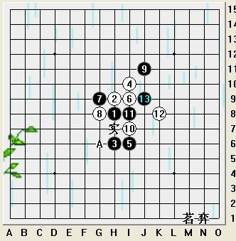

2010全团解村VS艾显平
#1 2010全团解村VS艾显平 作者：茗弈小刀 发表时间：2010-5-5 17:37:29
五月 ，春意盎然，花草争纷，你的脚步，铿锵有力，踏过绿地，来到济南。村儿，我的弟弟，怀着满腔热情，带着家族朋友们的寄望，参加了2010的全团赛，并取得了5胜1负1和的好成绩。
这盘是村儿（执白）和艾显平老师（执黑）的对局。瑞星开局，2打。

这个12是变招，最早出现于2000年在镇江“林机杯"比赛中，也是近几年比较流行的。13最强，这个14，以前吴嫡老师也推荐过，但考虑到白外势不太好拓展，很多棋手还是选择了下在A点。这里解村是为了避开对手的研究，而选择的实战这个14.
15，17交换优势，18这里可以先冲了再挡，但外势还是黑好，所以实战中直接档了眠三。其实个人感觉这个18，20不太好下，因为下边有杀必须要防一手，而无论白防在哪，黑都可以在上边畅通的发展，如图A,B两个点都不错。所以这个14白棋要有吃苦的思想准备了。艾老师的21手较稳妥和灵活，上下都可以做棋。

22限制黑21与上边的连接，发展跳眠三，搅乱右上方黑的空间。23仍很稳妥地以活2阻断白的眠三。24跟防，由于往上发展受阻，25果然与右下所有子力连接做棋，同时占据白6，16的眠2拓展与24的连接点。很强大的一手。艾老师强劲的进攻与防守结合水平再次得以体现。这里我想村儿也惊了一跳，不过很快恢复了镇定，把局面分析了一遍后，26强防，好棋！顿时黑下边的攻势被瓦解。
黑于是转身去到上边，黑棋每一手棋都为后边的路做了铺垫，如27，第一眼看上去就是与9，13，1，7的连接，虽然白占了要点，但黑又可以从容团角，在左上打开新的局面。而白棋也并不逊色，30手再度强防，占据黑的手筋点。31！哦，神之一手！表面上这手是反白22，28的2，其实这手棋把21，23.27和11，13都连接了起来，很隐蔽，很猥琐。村儿32手上当了！
那么32正确应该下哪呢？
如图这2个32可防。
如果这个32，那么上图至36白都是唯一。
实战中35手黑棋漏杀了，如图可直接杀：
既然下了这个31就要把它的精髓贯彻下去，但实战中总会有疏忽的时候，这里老虎也打了个盹。回到实战中：
虽然35漏杀了，但紧接着37再强攻，很有霸气的一手！白棋感觉已经岌岌可危。38手档黑的眠三也可以理解，但这里却是败招。不过村儿运气似乎不错，黑棋再度漏杀！如图可胜：
再看实战：
是啊，黑棋如果杀不出来后盘白会好下，局面正朝白优发展。但这里村儿的60手似乎稍微软了点，分析了下60手稍微硬点，白后边机会颇大：
这后边大家可以拆拆看
到88手双方和棋了，黑虽然没杀出来，但有几手棋很经典，值得学习，下棋的思路也很清晰，子力的灵活运用更值得称赞。白棋的防守也不错，反攻也抓住了机会，村儿，加油！
［ 五子痴 于 2010-5-5 17:38:27 时奖励此帖[金币加 20 威望加1］
［ 飞哥 于 2010-5-5 17:44:37 时花20金币送鲜花一朵］
［ wsmwy 于 2010-5-5 17:49:24 时花20金币送鲜花一朵］
［ 茗弈求学 于 2010-5-5 17:54:41 时花20金币送鲜花一朵］
［ 茗弈求学 于 2010-5-5 17:54:52 时花20金币送鲜花一朵］
［ 无尽 于 2010-5-5 18:15:10 时花20金币送鲜花一朵］
［ 黄药师 于 2010-5-5 18:57:09 时花20金币送鲜花一朵］
#2 Re:2010全团解村VS艾显平 作者：飞哥 发表时间：2010-5-5 17:43:00
分析得细致，不错的棋评。#3 Re:2010全团解村VS艾显平 作者：茗奕乐乐 发表时间：2010-5-5 17:43:42

#4 Re:2010全团解村VS艾显平 作者：木木夕 发表时间：2010-5-5 17:44:00
这么快就出来了，谢谢师父！
#5 Re:2010全团解村VS艾显平 作者：雨还在下 发表时间：2010-5-5 17:45:54
谢谢宝贝刀刀！
#6 Re:2010全团解村VS艾显平 作者：乔东兵 发表时间：2010-5-5 17:46:29
嗯嗯,一盘好棋
#7 Re:2010全团解村VS艾显平 作者：吃大米饭的鱼 发表时间：2010-5-5 17:47:23
解村真棒！为茗弈增光了！加油！
［ 飞哥 于 2010-5-6 18:59:31 时花20金币送鲜花一朵］
#8 Re:2010全团解村VS艾显平 作者：wsmwy 发表时间：2010-5-5 17:49:00
你的棋评总是嘿巴适撒
#9 Re:2010全团解村VS艾显平 作者：妙玉偷星 发表时间：2010-5-5 17:51:30
很久没回来看大家拉，这次比赛成绩不错，继续加油！
#10 Re:2010全团解村VS艾显平 作者：茗弈求学 发表时间：2010-5-5 17:54:01
 师父又写棋评了，真高兴，端根凳子坐着慢慢看.....
师父又写棋评了，真高兴，端根凳子坐着慢慢看.....
#11 Re:2010全团解村VS艾显平 作者：庞德 发表时间：2010-5-5 17:55:07
这个12可以黑虐全盘。。白很苦的。
#12 Re:2010全团解村VS艾显平 作者：日月之合 发表时间：2010-5-5 19:05:14
解村我偶像，我要向你学习！［ 飞哥 于 2010-5-6 18:59:06 时花20金币送鲜花一朵］
#13 Re:2010全团解村VS艾显平 作者：阔哥 发表时间：2010-5-5 20:04:39
逼和艾显平很不错，棋局中的漏洞小刀师傅也分解出来拉，如果艾老师抓住一次漏洞那就不妙拉，大家还是好好学学吧
解村--很棒
［ 飞哥 于 2010-5-6 18:59:58 时花20金币送鲜花一朵］
#14 Re:2010全团解村VS艾显平 作者：梦醉南天 发表时间：2010-5-6 0:22:51
仔细的看完,又是一次精彩的学习,谢谢师傅.大家努力,愿茗弈更上一层楼［ 飞哥 于 2010-5-6 19:01:18 时花20金币送鲜花一朵］
#15 Re:2010全团解村VS艾显平 作者：菜包先生 发表时间：2010-5-6 5:16:21
高飞老师不知道20后黑必胜了吗？［此帖子已被 菜包先生 在 2010-5-6 5:19:40 编辑过］
#16 Re:2010全团解村VS艾显平 作者：心上人 发表时间：2010-5-6 9:25:15
很好的棋评，楼主高［ 飞哥 于 2010-5-6 19:00:58 时花20金币送鲜花一朵］
#17 Re:2010全团解村VS艾显平 作者：伤情路 发表时间：2010-5-6 13:10:59
棋下的好，棋评写得更好
［ 飞哥 于 2010-5-6 19:00:31 时花20金币送鲜花一朵］